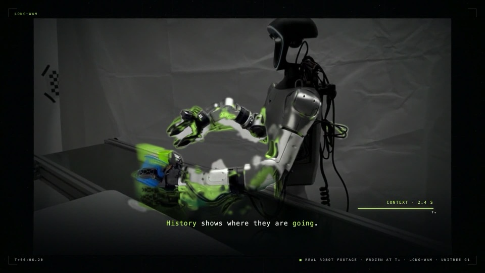
Long-WAM: Scaling the Context of World-Action Models
arXiv preprint, 2026
Long-context world-action models with streaming visual memory, deployed on YAM, Franka and Unitree G1.
Hello! I am a Research Scientist at NVIDIA Research, where I work with Prof. Song Han. My research centers on efficient generative models, with the goal of making them more scalable, practical, and accessible. I received my Ph.D. from The Hong Kong University of Science and Technology (Guangzhou), where I was advised by Prof. Yingcong Chen. Before that, I earned my Bachelor's degree from the School of Computer Science and Engineering at Beihang University. I have also been fortunate to work closely with Dr. Yukang Chen.
Recently, my work has focused on the LongLive series, which spans real-time interactive long video generation, NVFP4 training and inference infrastructure, retrieval-augmented long video generation, once-for-all distillation, and long-context world-action models for robotics.
*: Equal Contribution · Google Scholar

Long-context world-action models with streaming visual memory, deployed on YAM, Franka and Unitree G1.
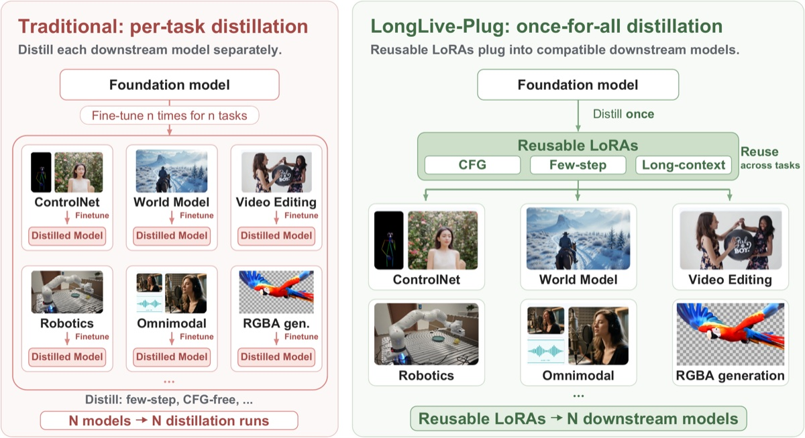
Treats long video generation as retrieval: an autoregressive generator pulls the most relevant past latents back into context to reduce drift, with the base model frozen.
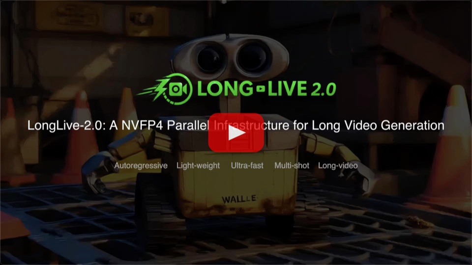
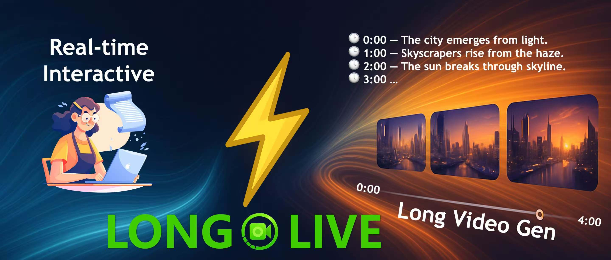
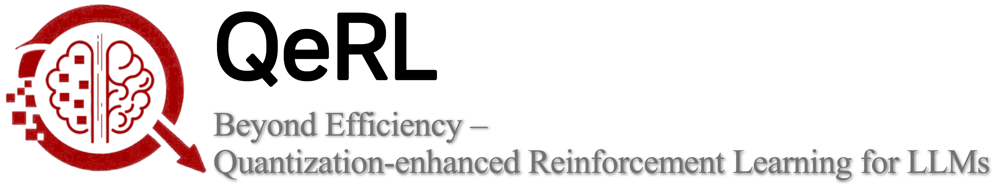
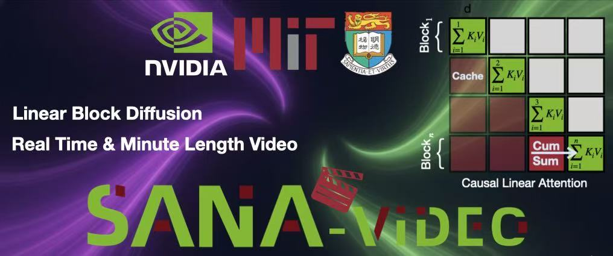
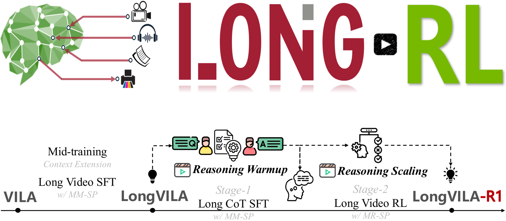
The third most active code contributor to the Long-RL repository.
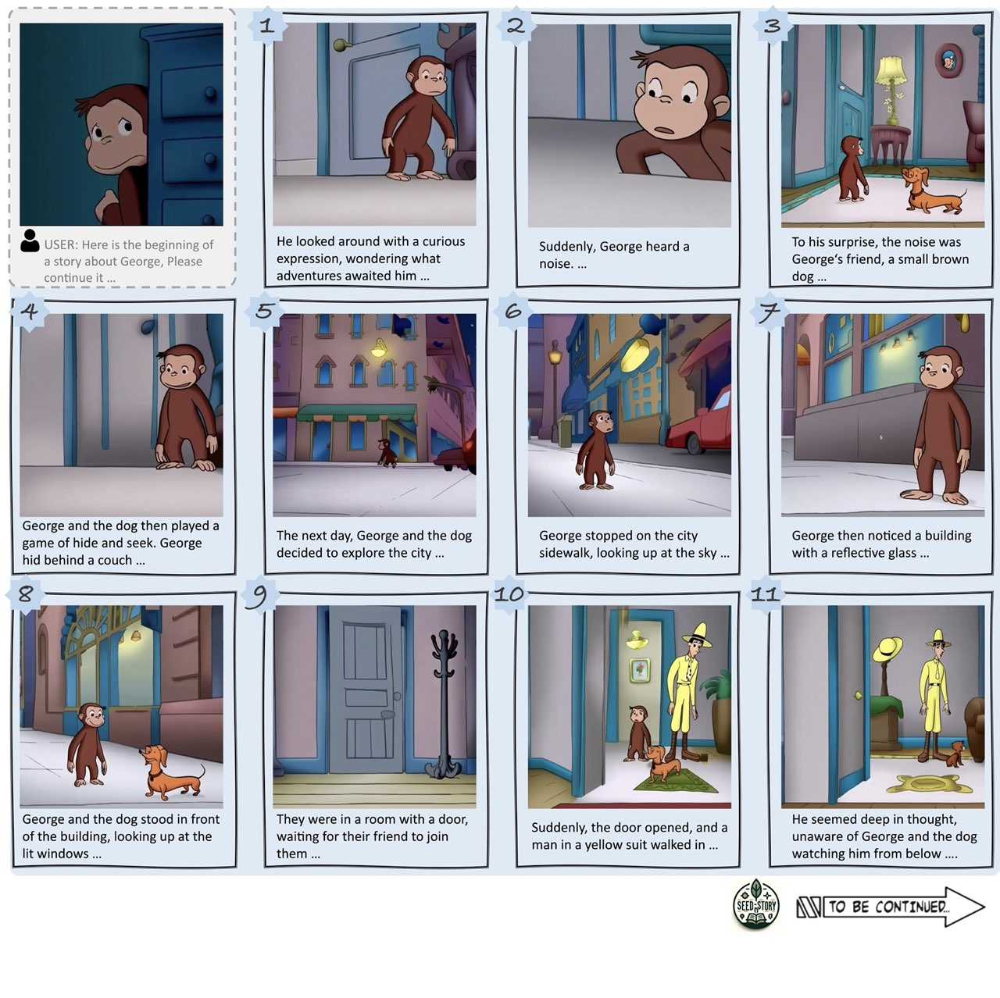
Hugging Face Daily Paper
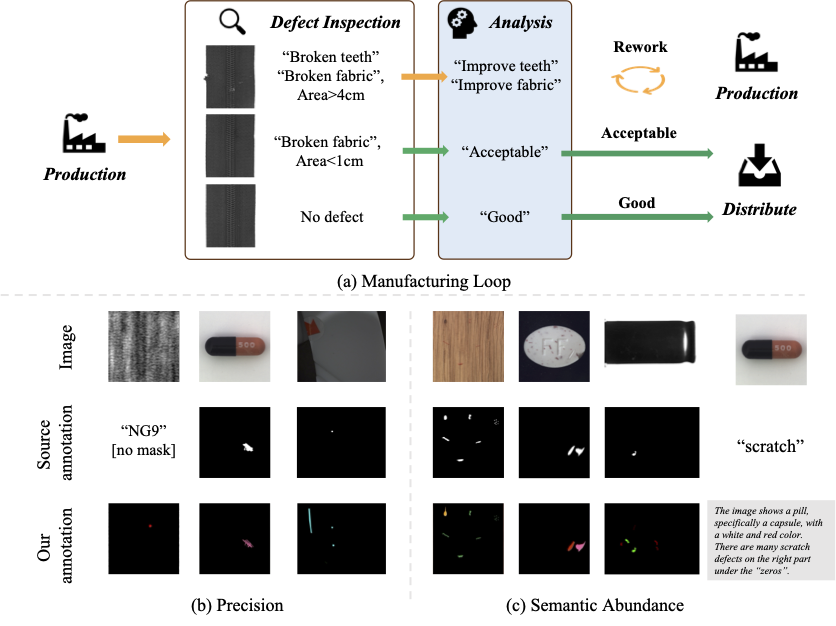
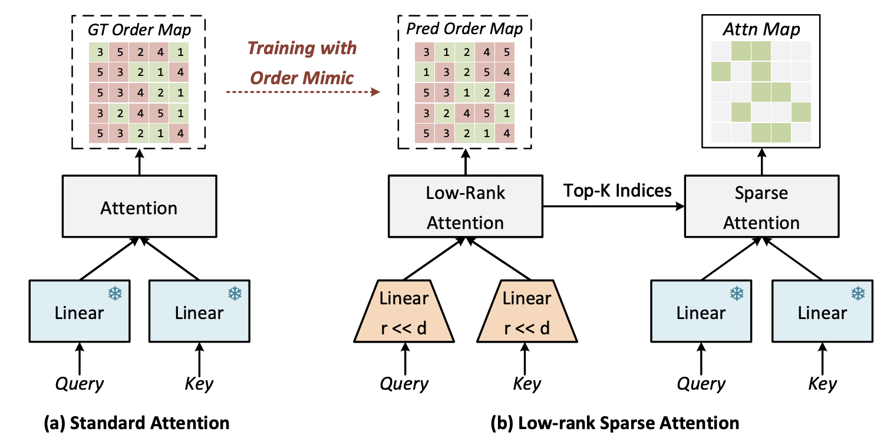
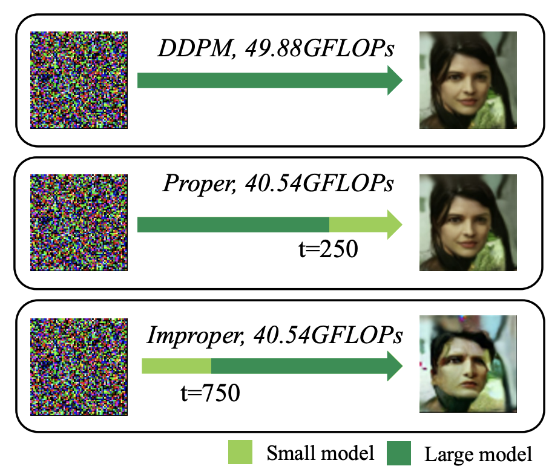
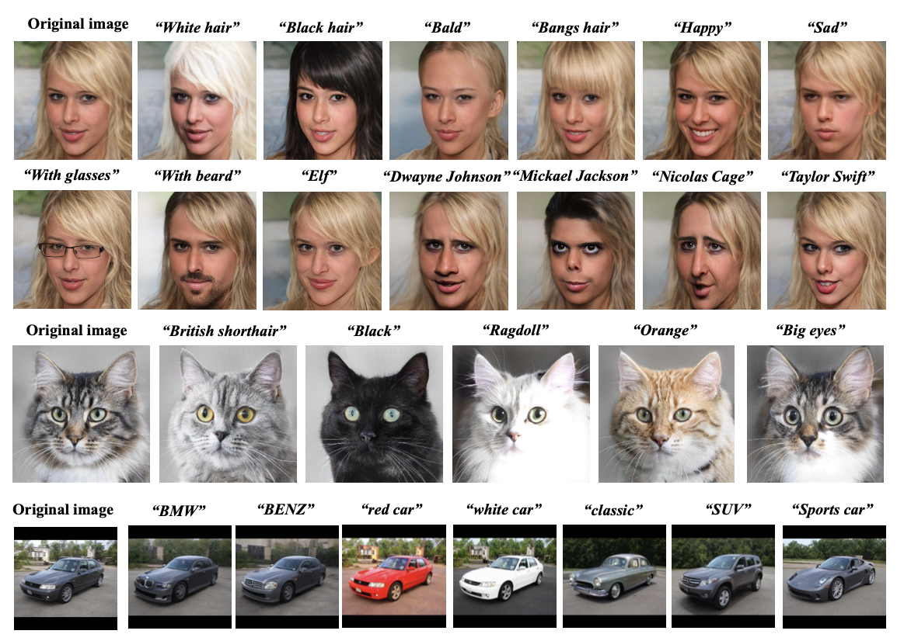
| Postgraduate Scholarship, HKUST(GZ) | 2022 - 2026 |
| 1st place on the challenge of the Third Workshop on Neural Architecture Search (NAS), CVPR 2022 | 2022 |
| Distinguished Graduate, School of Computer Science and Engineering, BUAA | 2020 |
| Undergraduate Research Scholarship, BUAA | 2019 |
Conference Reviewer:
| AIAA5023 Introduction to Computer Vision, HKUST(GZ) | 2023-2024 |
| AIAA5045 Medical Imaging, HKUST(GZ) | 2023-2024 |
| Principles of Computer Composition, BUAA | 2018-2019 |
| C Programming, BUAA | 2017-2018 |